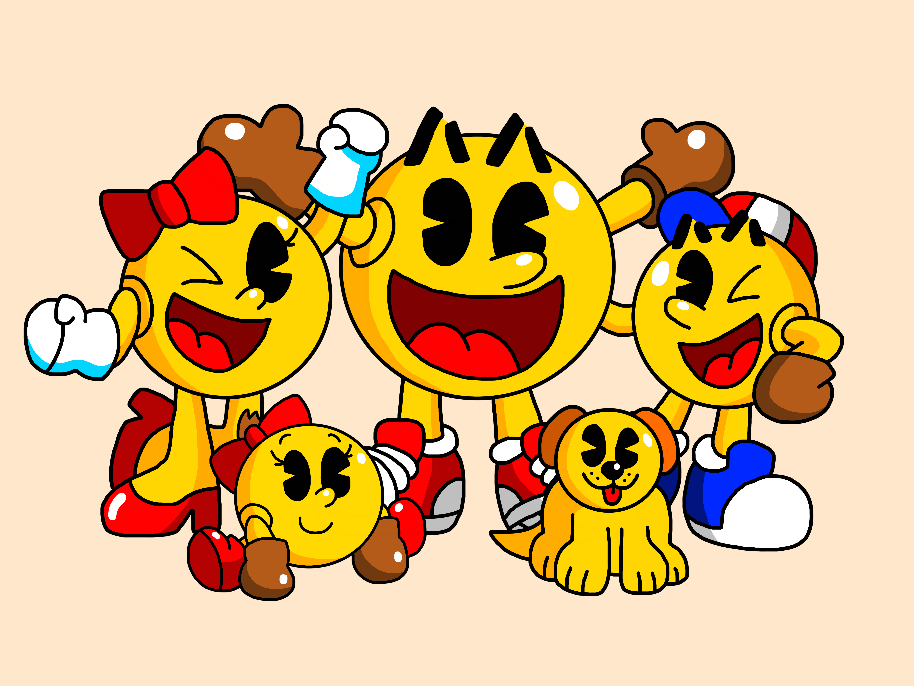
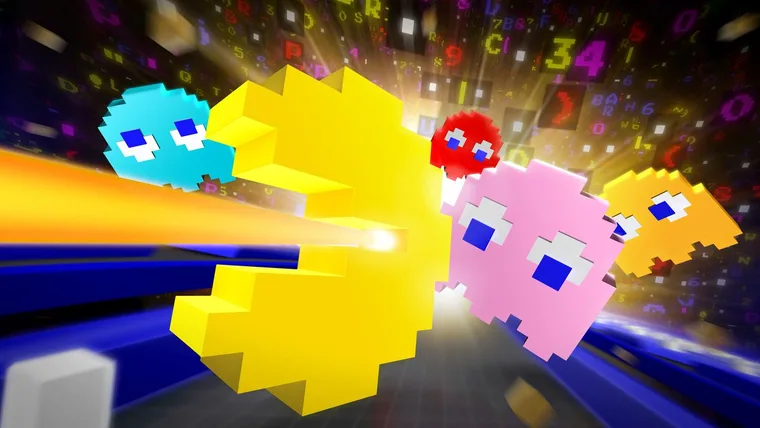
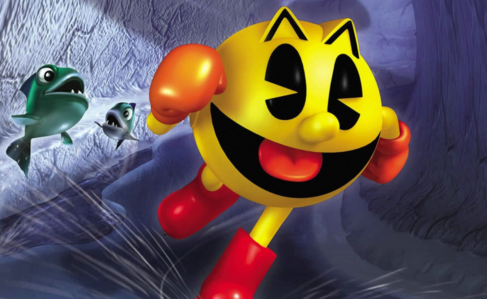

La creación de Toru Iwatani y otros nueve empleados de Namco no es un arcade en apariencia complicado: un personaje
diseñado como una pizza al que le falta un trozo debe ir comiéndose bolitas en un escenario laberíntico, a la vez que evita a cuatros fantasmas.
De ahí el origen de uno de los videojuegos más populares e icónicos de todos los tiempos: Pac – Man.
Como es de esperarse, esta entrega ha marcado la forma de ver y jugar videojuegos por estas razones:
Patrones desafiantes
Los villanos de esta entrega son un cuarteto de fantasmas coloridos, que, aunque no lo creas no se mueven
de manera aleatoria, sino que por detrás esconden una primitiva, pero genialmente diseñada inteligencia artificial
que caracterizaba a cada uno de ellos.
Mayor comunidad
En los primeros años de la salida de los videojuegos, los jugadores en su mayoría eran solo varones debido al contenido
que ofrecían cada título. Sin embargo, Pac–Man fue de las primeras entregas donde también el público femenino es y sigue
siendo atraído y bienvenido a la comunidad gamer.

Nuevos géneros
Al estar rodeado de múltiples entregas repletas de acción y disparos, Toru Iwatani y sus colaboradores optaron por una
mecánica distinta, dando origen así el género laberinto. Dejando claro que los videojuegos son más que simuladores de combate.

Habilidades especiales
Pac–Man fue de los primeros títulos donde se podía obtener aumentar de poder al jugador durante la partida a través de un
punto demasiado grande en la pantalla, ese punto es nada y nada menos que la Superpastilla. Dicha pastilla te da la capacidad
de comerte a los fantasmas sin que tener que perder una vida, siendo una de las bases para títulos posteriores implementar mejoras
y poderes adicionales a sus personajes.

Tras el gran éxito de videojuego, se lanzaron secuelas, spin-offs y en diferentes plataformas que, en su mayoría, fueron bien recibidos por el público.
Algunos de ellos se mostrarán a continuación, haz clic en los títulos para ver más información sobre cada uno de ellos: